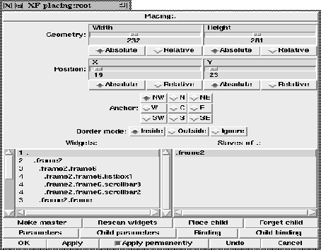

This procedure activates the placing dialog for the currently selected widget, or the widget that was passed on as first parameter. With this dialog box, it is possible to change the placing of the complete widget tree. This means that the user only has to call this dialog box once to layout the complete widget tree.

Figure: The procedure XFProcConfPlacing
The top area contains the available placer options. The options show the current setting of the child selected in the right list at the bottom. Selecting another child in that list updates the settings. The left list contains the widget tree. By double clicking at a widget in that list, this widget is made the current master. The right list contains the children placed (managed) by this master.
As there exist two independent geometry managers, it can happen that a child of a widget should be managed with the other geometry manager. This is done with the two buttons (Place child) and (Forget child).
The remaining buttons at the bottom give access to the other widget specific dialogs. There is always one button that activates the parameter box for the current master, and one button that activates it for the current child. There are also buttons that apply the changes and terminate the dialog box.